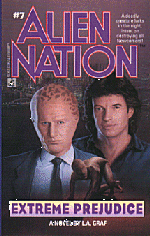

Richard Lee Byers
Jim Butcher
Laurell K Hamilton
Janeen O'Kerry
Karen Rose Cercone
Steven Lee Climer
Julia Ecklar
Diana G. Gallagher
Ray Garton
Gerry Hausman
Brian Lumley
Michael A. Stackpole
Dan Stark
David Niall Wilson
|
BIOGRAPHY
Julia is a science fiction author whose work includes assorted STAR TREK titles and many other books!
ORDER BOOKS!
|  |
On a business trip to
Pittsburgh, detectives Matthew Sikes and his Newcomer partner, George
Francisco, stumble on what appears to be an unusual homicide. It isn't
long before the case leads them to a frightening world of abuse and
violence that set in motion the series of horrifying murders born of an
unremitting hate--murders that target only the innocent.
With bodies piling up and time running out, Sikes and
Francisco must race against the clock to stop the killing -- and face a
terrifying monster from beyond the stars!
Alien Nation #7: Extreme Prejudice by L.A. Graf
(Pocket Books, 1995) ISBN 0-671-79570-8
|
|
Milennia ago, an
apocalyptic battle was fought in the Alpha Quadrant. The losers were
banished, but what became of the victors?
The Federation is threatened by this ancient mystery
when a battered and broken version of the Defiant is found, frozen for
five thousand years, in an icy cloud of cometary debris. Captain
Sisko and the crew of Deep Space Nine are summoned to answer the most
baffling question of their lives: how and when will their ship be
catapulted back through time to its destruction? And does its ancient
death mean that one of the combatants in a primordial battle is poised now
to storm the Alpha Quadrant? Only the wormhole holds the answer--and the
future of the Federation itself may depend on the secrets it conceals.
Book Three in the most gripping crossover epic of all
time!
Four Weeks on USA Today Bestseller List! #1
Bestselling DS9 Book in History!
Invasion!: Time's Enemy by L.A. Graf (Pocket Books,
1996)
ISBN 0-671-65817-4
|
|
In the beginning there was
Planet Earth. In the end, there was nowhere to go but the
stars...
The Project: Noah's Ark. The Mission: Rescue the
remaining species of a lost world called Earth.
ReGenesis
The future has arrived--with a vengeance. Planet Earth
is no longer a suitable environment for sustaining life. Every creature
great and small is on the verge of extinction. Their only hope: Noah's
Ark, a scientific mission to find new homes for the last surviving species
of Earth...
An odyssey that will take both human and beast to
strange new worlds across the galaxy...
An epic journey to a new beginning.
"Julia Ecklar spins a fascinating new epic legend
about tomorrow's scientific warrior, fighting for the rights of species
among the stars."
--David Brin, author of Brightness Reef.
Regenesis (Ace Books 1995)
ISBN:
0441001890 |
|
A freak shuttlecraft
accident -- and suddenly Captain Kirk and most of his senior
officers find themselves adrift in space, with no hope of rescue, no hope
of repairing their craft, or restoring communications--with nothing, in
short, but time on their hands.
Time enough for each to tell the story of the
Kobayashi Maru-- the Starfleet Academy test given to command cadets.
Nominally a tactical exercise, the Kobayashi Maru is in fact a test of
character revealed in the choices each man makes -- and does not make.
Discover now how Starfleet cadets Kirk, Chekov, Scotty
and Sulu each faced the Kobayashi Maru...and became in turn Starfleet
officers.
Star Trek #47: The Kobayashi Maru by Julia Ecklar
(Pocket Books, 1989)
ISBN 0-671-65817-4 |
|
Sent to the icebound planet of
Nordstral to investigate a mysterious outbreak of insanity, the
crew of the U.S.S. Enterprise find themselves drawn into another, even
deadlier mystery upon their arrival. A team of research scientists has
disappeared on Nordstral's frozen wasteland, leaving no clue to their
whereabouts, and no hint of their fate.
While Uhura and Chekov tackle the mystery surrounding
the scientists' disappearance, Kirk and McCoy search for the truth behind
the outbreak of mental illness. But both teams soon find themselves in
danger as the planet undergoes a series of massive earthquakes and
electromagnetic disruptions. Unable to contact the Enterprise, both teams
must fight for their lives as they try to solve the mystery of Nordstral--
before the world tears itself apart!
Star Trek #60: Ice Trap by L.A. Graf (Pocket Books,
1992)
ISBN 0-671-78068-9 |
|
The disappearance of
Andorian scientific genius Muav Haslev fuels tensions between the Orions
and Andorians, coming dangerously close to full scale war. Captain Kirk
and the crew of the U.S.S. Enterprise are called to Starbase Sigma One,
located on the edge of Andorian-Orion space, to patrol the sector as a
deterrent to hostilities.
On arrival, the crew encounters an inexplicable series
of events, beginning with missing equipment and shipboard malfunctions.
After a deadly transporter accident, Kirk suspects sabotage--suspicions
that are confirmed by the mysterious murders of three Federation
officials...
Star Trek #62: Death Count by L.A. Graf (Pocket Books,
1992)
ISBN 0-671-79322-5 |
|
When a covert Elasian mining
operation interferes with a Federation geological expedition,
Captain James T. Kirk and the crew of the starship Enterprise are
dispatched to the planet Rakatan to mediate between the rival parties. The
Elasian Dohlman claims that the planet and its dilithium deposits are
hers. But the geologists warn that if Rakatan Mons -- the galaxy's largest
stratovolcano -- should erupt while the Elasians are mining its flanks, no
amount of dilithium will save them.
While Lt. Commander Uhura and a landing party struggle
to determine if the Dohlman's claim is true, Captain Kirk puts his ship on
the line to keep the two sides from each other's throats. Soon, however,
concerns over the planet's ownership are overshadowed by the arrival of a
hostile Elasian armada and a cataclysmic volcanic explosion on the surface
that threatens all parties with a deadly shower of destruction...
Star Trek #68: Firestorm by L.A. Graf (Pocket Books,
1994)
ISBN 0-671-86588-9 |
|
It began with The Lost
Years, the long-awaited story of what happened to Captain Kirk
and the legendary crew of the U.S.S. Enterprise when their original
five-year mission ended. Now, it is more than a year later, and Kirk and
his crew have settled into their new, separate assignments.
But when Sulu and Chekov find themselves framed for
murder and treason, the two officers are forced to go into hiding. As
Admiral Kirk and Uhura frantically search for evidence to prove Sulu and
Chekov innocent, they uncover a plot that threatens the very foundations
of Starfleet.
The web of conspiracy is woven tighter as the real
culprits and Federation agents close in on the fugitives. Unsure of whom
to trust and with time running out, the former Enterprise shipmates must
once again rely on each other to find the truth and prevent the Federation
from facing utter destruction.
Star Trek #70: Traitor Winds by L.A. Graf (Pocket
Books, 1994)
ISBN 0-671-86913-2
/TD> |
|
More than any other television show, more
than any other motion picture series, Star Trek has for nearly thirty
years been the most popular space adventure of all time. Now Star Trek:
Voyager joins Star Trek, Star Trek: The Next Generation, and Star Trek:
Deep Space Nine as the newest star in the ever expanding Star Trek
Universe.
Pocket Books is proud to present the novelization of
Caretaker, the premiere episode of Star Trek: Voyager. This is the story
of Captain Kathryn Janeway and the crew of the starship Voyager.
Transported by alien technology to the other side of the galaxy, years
away from the Federation and everything they call home, their voyage back
will be a fantastic odyssey that will take them through uncharted space,
into dangers as they travel where no one has gone before...
Star Trek: Voyager--Caretaker by L.A. Graf (Pocket
Books, 1995)
ISBN 0-671-51914-X
Based on a script by Michael Piller
& Jeri Taylor.
Story by Rick Berman & Michael Piller & Jeri
Taylor. |
Bibliography
Novels
- 1989 Star Trek TOS: The Kobayashi Maru (Star Trek #47), Pocket Books, ISBN 0-671-65817-41992
- Star Trek TOS: Death Count (with Karen Rose Cercone and Melissa Crandall, writing as L.A. Graf), Pocket Books, ISBN 0-671-79322-51992
- Star Trek TOS: Ice Trap (with Karen Rose Cercone, as L.A. Graf) Star Trek #60, Pocket Books, ISBN 0-671-78068-91994
- Star Trek TOS: Firestorm (with Karen Rose Cercone, as L.A. Graf), Pocket Books, ISBN 0-671-86588-91995 ReGenesis, Ace Books, ISBN 0-441-00189-01995
- Star Trek: Voyager: Caretaker (with Karen Rose Cercone, as L.A. Graf), Pocket Books, ISBN 0-671-51914-X1996
- Star Trek DS9: Invasion!: Time's Enemy (L.A. Graf, Deep Space Nine #16), Pocket, Books ISBN 0-671-65817-42002
- Star Trek TOS: Janus Gate: Book One, Present Tense2002
- Star Trek TOS: Janus Gate: Book Two, Future Imperfect2002
- Star Trek TOS: Janus Gate: Book Three, Past Prologue
- 2003 Fictionwise eBook Star Trek TOS: Traitor Winds (with Karen Rose Cercone, as L.A. Graf), Pocket Books, ISBN 0-671-86913-2
Short Fiction
- The Music Box (Analog, Sep 1989)
- Extra Ellies (Analog, May 1990)
- Burning Bridges (Analog, Nov 1990)
- A Sweet Disorder (Analog, Sep 1991)
- Ice Nights (Analog, Oct 1992)
- Blood Relations (Analog, June 1992)
- Promised Lives (Fantasy & Science Fiction, Sep 1993)
- Tide of Stars (Analog, Jan 1995)
- The Human Animal (Analog, Apr 1995)
- Thylacine Dream (1996 in Otherwere: Stories of Transformation)
Discography
- Minus Ten and Counting (contributor)
- Traveller (re-released on CD in 2006)
- Genesis (out-of-print)
- Divine Intervention (Prometheus Music, www.prometheus-music.com)
- Walkabout (Dodeka Records)
- Balance (DAG Productions, www.filk.com)
- Horsetamer's Daughter (Off Centaur Publications, 1983)
- A Wolfrider's Reflections (Warp Graphics, 1987)
Awards
- John W. Campbell Award For Best New Writer 1991
Pegasus Awards
- Best Female Filker 1984
- Best Performer 1987
- Best Writer/Composer 1990
- Best Literature Song 1990: Daddy's Little Girl
- Best War/Vengeance Song 1991: Temper of Revenge
- Best Folk Song 1992: God Lives on Terra(with Susan Cooper)
- Best Sorcery Song 1997: The Dark is Rising
- Best Classic Folk Song 2004: Ladyhawke!
CONTACT INFO
email: jecklar@inorbit.com
homepage: http://www.sff.net/people/Julia_Ecklar
|